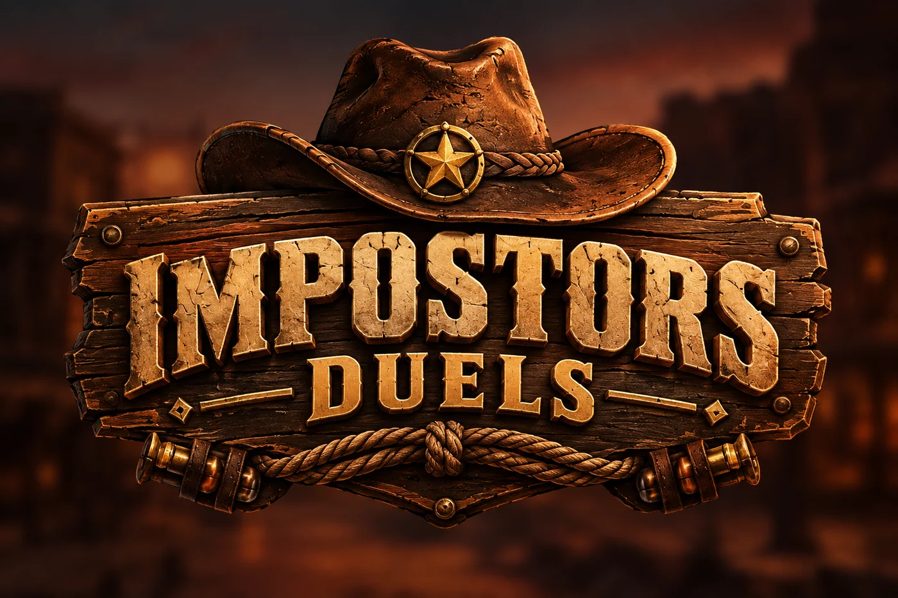

Recibe tu palabra
Consulta tu palabra en privado. El impostor recibe una palabra relacionada y debe deducir el tema sin levantar sospechas.
Deducción, estrategia y una pandilla
Recibe una palabra secreta, comparte pistas sin delatarte y lee las respuestas de la mesa. ¿Podrás descubrir quién intenta pasar desapercibido?
Android · Amigos, bots y Wi-Fi local

BIENVENIDO A LA MESAEL MISTERIO EMPIEZA AQUÍ
Elige una categoría y reparte los roles en secreto. La mesa comparte pistas mientras el impostor intenta entender qué palabra tiene el resto.
Consulta tu palabra en privado. El impostor recibe una palabra relacionada y debe deducir el tema sin levantar sospechas.
Por turnos, comparte una pista breve. Ayuda a tu equipo sin revelar demasiado y presta atención a las respuestas.
Debatan las sospechas, voten y expulsen al impostor. Si logra sobrevivir, todavía puede intentar adivinar la palabra.
ELIGE TU PARTIDA
En grupo o en solitario, siempre hay una historia por descubrir.
LA PANDILLA COMPLETA
Jueguen juntos pasando un mismo móvil. Cada persona mira su rol y su palabra en privado.
TÚ CONTRA LA MESA
Enfréntate a bots que dan pistas, sospechan y votan. Descubre si logras engañarlos.
CADA QUIEN CON SU MÓVIL
Crea una mesa y comparte el código para jugar con amigos conectados a la misma red Wi-Fi o zona compartida.
UNA MESA LLENA DE HISTORIAS
Completa partidas, descubre categorías y sigue tu avance. La liga, los logros y las recompensas mantienen viva la rivalidad después de cada ronda.
Liga, estadísticas y trofeos
Consulta tu rendimiento, compite en la clasificación y reúne reconocimientos.
Tienda y recompensas
Gana estrellas jugando y canjéalas por marcos, temas y artículos para personalizar tu perfil.
SE BUSCA
¿QUIÉN ESCONDE EL SECRETO?
★ REÚNE A TUS AMIGOS ★LA MESA ESTÁ LISTA
Descubre quién sabe mentir mejor.